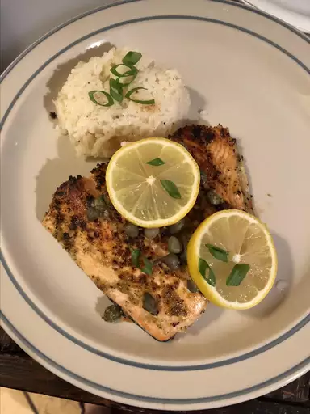

Pan-Seared Salmon

Learn how long to cook salmon on the stove with this
easy pan-seared salmon recipe. The salmon fillets are
simply seasoned with salt, pepper, and capers. Garnish
with slices of lemon.
Ingredients
- salmon fillets
- olive oil
- capers
- salt
- black pepper
- lemon slices
Steps
- Preheat a large heavy skillet over medium heat
for 3 minutes.
- Coat salmon fillets with olive oil; place
skin-side down in the preheated skillet and
increase heat to high. Sprinkle with capers,
salt, and pepper; cook for 3 minutes on one
side. Turn salmon fillets over; continue to
cook until salmon flakes easily with a fork,
about 5 minutes.
- Transfer salmon to individual plates and garnish
with lemon slices
Back to home